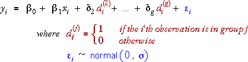
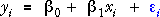
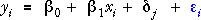

Regression model for g groups
It is fairly easy to extend the 2-group model at the start of this section to allow for 3 or more groups. This model is again a general linear model (GLM).

The indicator variables pick out one of the δ parameters, depending on group membership, so the model implies the following models in the different groups.


Note that the δ-parameters describe the differences between the mean responses in the other groups and that in group 1.
Group 1 is the baseline group — the parameters compare the other groups to it.
Choice of the group to use as the baseline group is arbitrary — the flexibility of the model does not depend on the choice.
Californian wine quality
This data set arises from a wine quality contest in California that had entries from all over the state. The wines were marked by judges on several characteristics including Clarity, Aroma, Flavour and Body, and an overall score for Quality was also given. We examine here the relationship between the Quality and Body of the wines, based on the average scores of all judges for each wine. The wines were also classified by the part of California in which they were produced, North, Napa valley and Central.
To simplify the design matrix, we initially show only 7 wines from each region.
The model is expressed in matrix notation below.
Click on any y-value to see the model that is used for that wine. Note that there is a simple linear model with intercept β0 and slope β1 for wines from the North. For wines in the other two regions, the indicator variables add other constant parameters, β2 and β3.
Parameter estimates
Again, the standard GLM theory provides a formula for the least squares estimates of the model parameters,

and a computer can use this to evaluate the estimates.
Graphical representation
This model can be respresented by parallel lines on a scatterplot of y against x, one for each group. The vertical distances of these lines from at of group 1 are given by the coefficients of the indicator variables.
Californian wine quality
The diagram below shows the full data set, using different colours for the three regions in California.
There are 4 parameters in the model (excluding the error standard deviation, σ), so there are 4 red arrows can be dragged to adjust the model parameters.
Finally, click the checkbox Show residuals and click the button Least squares to set the parameters to their least squares estimates.
From the least squares estimates, we estimate that: